무바늘 주입
바늘 없이 약물을 피부 속으로 전달
What is All-Jet
All-Jet은 솔레노이드 기반의 초고압 에너지를 이용해 약물을 마이크로젯 형태로 분사합니다. 약물 점도에 따라 150, 200, 250 μm 노즐을 선택하고, 40.68 MHz 고주파 핸드피스를 함께 사용하는 플랫폼입니다. 이중 냉각 구조는 냉각 대기 부담을 줄이고 연속적인 운영을 지원하도록 설계했습니다.
바늘 없이 약물을 피부 속으로 전달
냉각 대기 없이 넓은 부위도 신속하게
3종 노즐로 약물 점도에 맞게 선택
40.68 MHz 고주파
KEY TECHNOLOGY

01, PRECISION NOZZLE
유체역학 기반 하향 테이퍼 구조, 와류 최소화, 3종 노즐(150/200/250 μm) 교체
전 점도 약물 호환
02, RADIO FREQUENCY
All-Jet에 적용된 40.68 MHz 고주파 핸드피스
약물 전달 효율 향상
03, DUAL COOLING
1차 솔레노이드 액침 냉각, 2차 히트파이프 4개 + 펠티어, 40°C 이하 유지
1시간 이상 연속 구동OPERATING PRINCIPLE
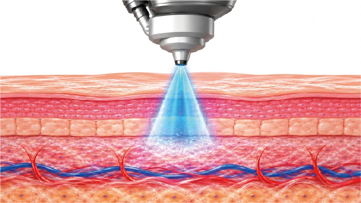
솔레노이드 기반의 고압 에너지가 약물을 순간적으로 분사합니다.
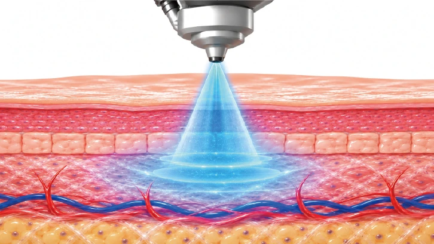
마이크로젯으로 분사된 약물이 피부층으로 전달됩니다.
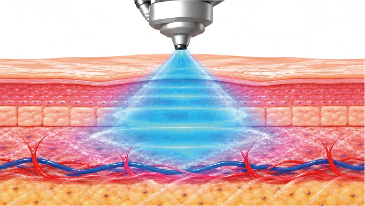
집중형 노즐 설계로 유효성분의 안정적인 전달을 고려했습니다.
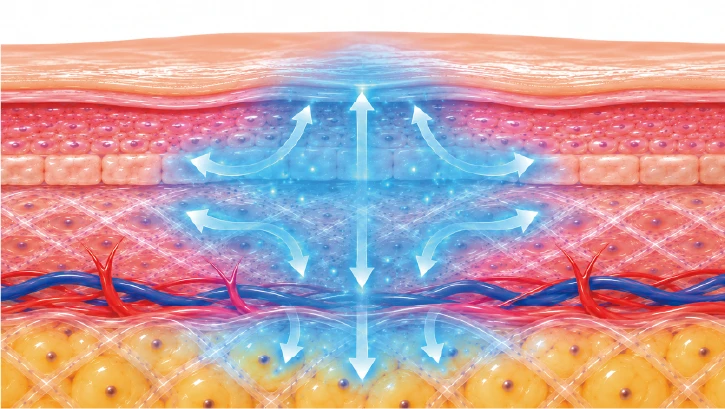
피부와 두피 등 다양한 적용 가능성을 하나의 플랫폼에서 확장합니다.
PRODUCT GALLERY
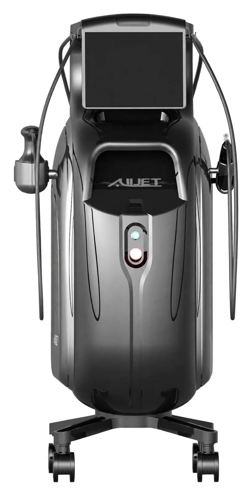
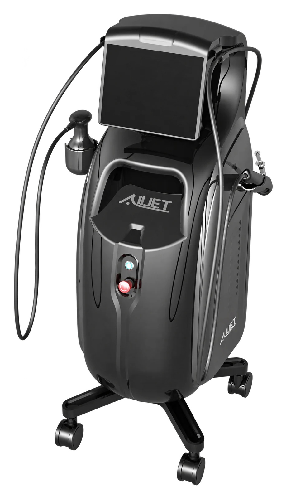
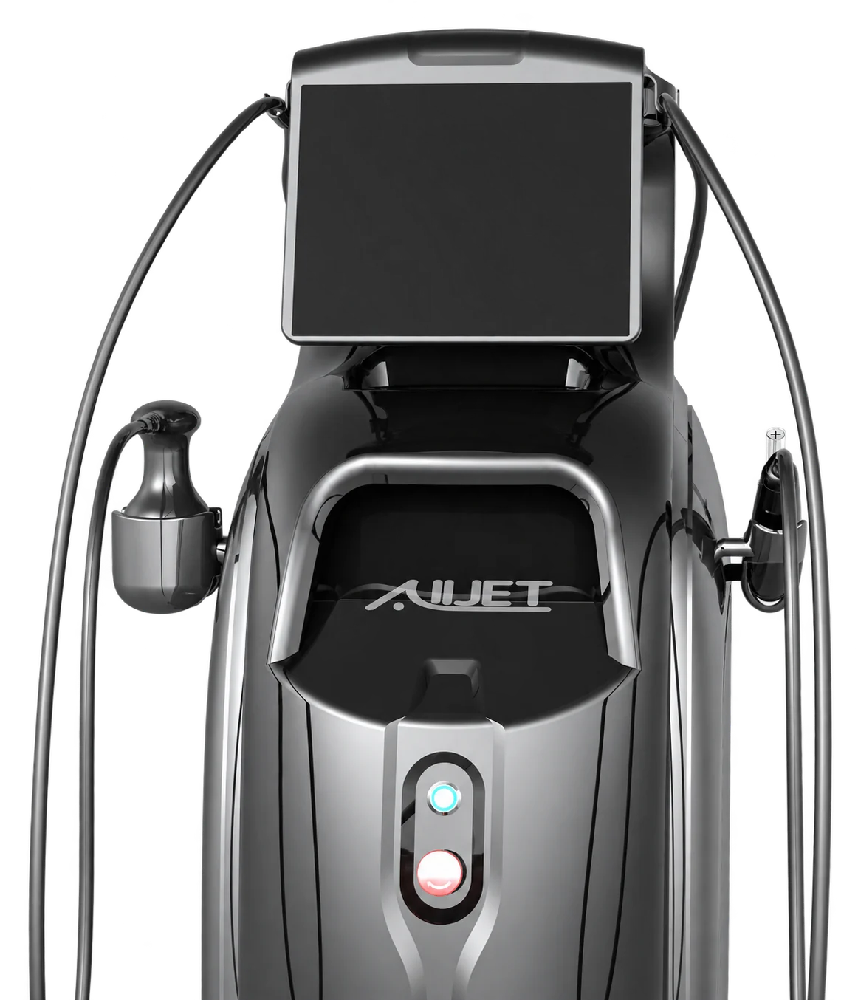
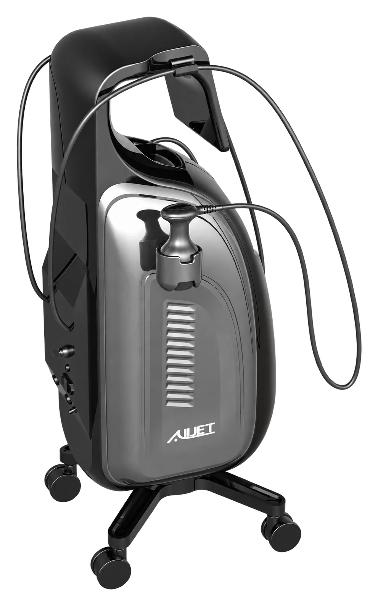

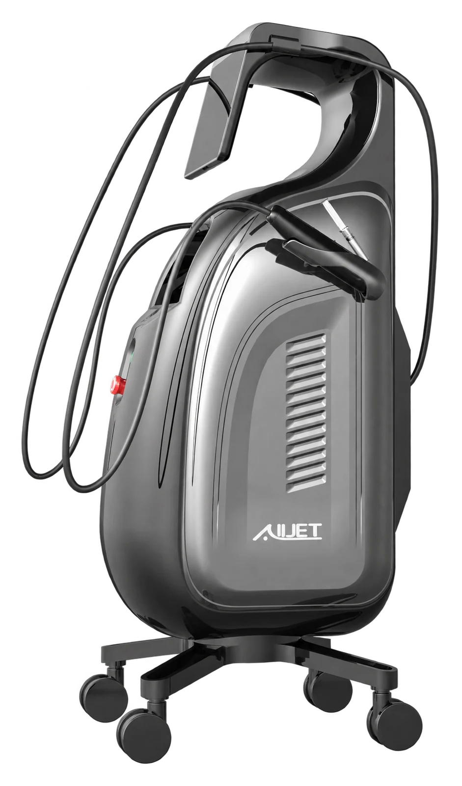
COMPONENTS
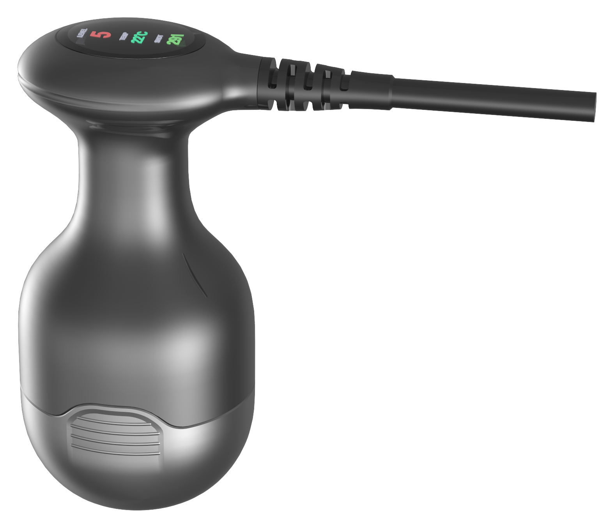
40.68 MHz RF Handpiece
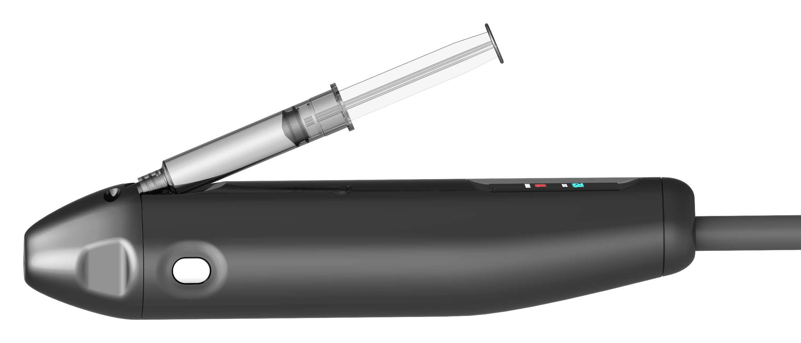
RFID-enabled Cartridge
SPECIFICATIONS
개발 단계의 자료를 기준으로 하며, 최종 제품 및 인허가 과정에서 일부 변경될 수 있습니다.